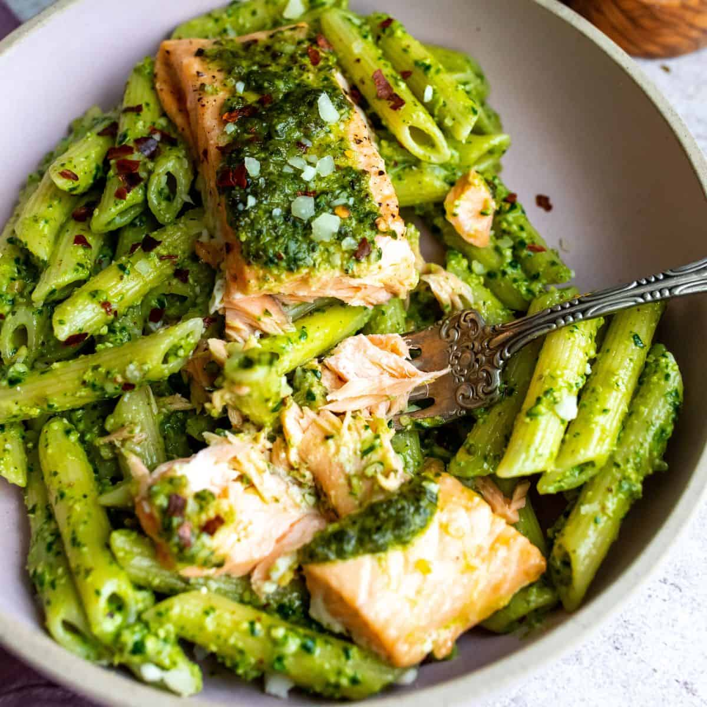

Green pasta with salmon pesto

In existential need for a second dish
This recipe is simple to whip up, it’s elevated and beautiful. The spinach walnut pesto is full of superfoods and antioxidants.
Ingredients
- Salmon
- Pasta
- Spinach
- Butter
- Garlic
- Oil
- Citron
- Parmesan
Preparation
- Start water to boil pasta in. Add all the pesto ingredients to a food processor and blitz until blended well and the walnuts are broken down. Feel free to add more olive oil if you’d like to thin it out or it the pesto is not blending. Set aside.
- Preheat to 375º. On a parchment lined baking sheet, add the salmon and top with pesto, about 1-1.5 tbsp on each salmon. The rest will be for the pasta. Bake Salmon for 12-15 minutes.
- While pasta is boiling, be sure to collect 1.5 cups of pasta water before draining!
- Once the pasta is al dente, grab pasta water, drain and put back into the pot. Add in the pesto and 1/2 cup of pasta water at a time until pesto is evenly spread. Plate the pasta and add the salmon on top. Sprinkle with extra parmesan if desired and enjoy.